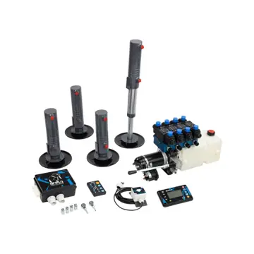
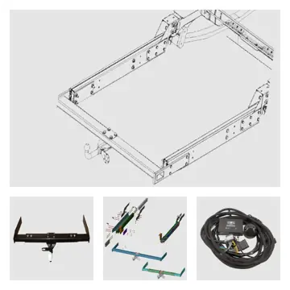
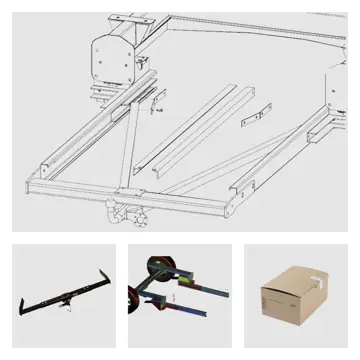

Fiat Ducato
Anhängerkupplung für Kastenwagen Fiat Ducato ZFA250 - Abnehmbar ab Bj. 06/2006 bis aktuell
ab 429,00 €inkl. MwSt., versandkostenfrei

Hydraulikstützen Anlage Pilote G741 Fiat Ducato ZFA250 mit AL-KO Chassis – Hydraulik-, Hub- und Kurbelstützen, Keile, Nivellierkissen. Passend für: Fiat Ducato. Preis ab 4.640,00 € inkl. MwSt., versandkostenfrei. Montage in Bohmte und Diez nach Terminvereinbarung möglich.
Technische Spezifikationen der Hubstützen:
Technische Daten der Pumpeneinheit:
Die Italia Camper 24 hydraulischen Hubstützen bieten eine bahnbrechende Lösung für optimale Stabilität auf FIAT-Fahrgestellen mit abgesenktem Al-ko-Rahmen. Unsere fortschrittlichen Stützen sind speziell auf diese Fahrzeugkonfiguration abgestimmt, um eine herausragende Stabilisierung zu gewährleisten. Das Hydrauliksystem ermöglicht eine mühelose und schnelle Nivellierung Ihres Reisemobils, und innerhalb kürzester Zeit steht Ihr Fahrzeug perfekt ausgerichtet. Schluss mit dem umständlichen Einsatz von Keilen – erleben Sie sorgenfreie Reiseabenteuer mit Italia Camper 24. Unsere bewährte Qualität und innovative Technologie garantieren nicht nur Stabilität, sondern auch Komfort auf Ihren Fahrten. Entdecken Sie das Beste für Ihr FIAT-Fahrgestell mit den hydraulischen Hubstützen von Italia Camper 24 – für ein sicheres und angenehmes Fahrerlebnis, egal wohin Ihre Reise Sie führt.
Nach einer langen und anspruchsvollen Fahrt sehnen Sie sich nach nichts mehr als einer entspannten Zeit auf einem idyllischen Stellplatz. Doch die Freude kann schnell getrübt werden, wenn Ihr Reisemobil schief steht. Hier kommen die hydraulischen Hubstützen von Italia Camper 24 ins Spiel, um Ihnen ein Höchstmaß an Bequemlichkeit zu bieten. Lästiges Hantieren mit Wagenhebern, Keilen und Wasserwaage gehört der Vergangenheit an – dank des innovativen Hydraulikstützensystems, das Ihr Reisemobil in nur 120 Sekunden perfekt waagerecht positioniert.
Die hydraulischen Hubstützen von Italia Camper 24 sind ein wahres Meisterwerk der Stabilität und Präzision. Kurz vor dem Bodenkontakt setzen sie an und gleichen Unebenheiten aus, um das Fahrzeug sanft auszurichten. Durch die simultane Bewegung von jeweils zwei Stützenpaaren wird eine optimale Verteilung der Last erreicht und Verwindungen im Reisemobil vermieden. Sogar auf weichen Böden bieten die speziell dimensionierten Fussteller der hydraulischen Hubstützen einen sicheren Stand, damit Sie sich ganz auf Ihr Reisemobil-Abenteuer konzentrieren können.
Die Bedienung dieses innovativen Systems ist denkbar einfach und kann bequem über die mitgelieferte Funkfernbedienung oder das manuelle Bedienelement erfolgen. Das 2-Wege-System ermöglicht nicht nur das hydraulische Absenken der Stützen, sondern auch das zügige Anheben für eine mühelose Selbstmontage. Die beiliegende umfassende Einbau- und Bedienungsanleitung sowie die passgenauen Hydraulikschläuche und Schraubverbindungen machen die Installation spielend einfach.
Selbst wenn die Batterie einmal entladen ist, können Sie sich auf die Zuverlässigkeit des Hydraulikstützensystems verlassen. Die integrierte Handpumpe am Hydraulikpumpenmotor ermöglicht einen manuellen Betrieb, und für zusätzliche Sicherheit sorgen der eingebaute Alarm und die Warnleuchte. Diese weisen darauf hin, die hydraulischen Hubstützen hochzufahren und verhindern mögliche Unfälle oder Schäden.
Genießen Sie die zahlreichen Vorteile der hydraulischen Hubstützen von Italia Camper 24: Perfekte Waage in weniger als 2 Minuten, sicheres Einrasten dank Endschaltern an jedem Hydraulikzylinder, leicht, kompakt, wartungsfrei und ideal für unterschiedliche Bodenverhältnisse. Profitieren Sie von einem unschlagbaren Preis-Leistungs-Verhältnis und starten Sie Ihre Reise ohne Sorgen, denn wir wissen: Die hydraulischen Hubstützen von Italia Camper 24 setzen neue Maßstäbe in puncto Stabilität und Bequemlichkeit – Ihr Reisemobil verdient nur das Beste!
| Gewicht der Hubstützen | 60 kg |
|---|---|
| Länge | 480 mm |
| Breite | 240 mm |
| Höhe | 225 mm |
| Fiat Ducato | Montageanleitung für hydraulische Hubstützen |
| Fiat Ducato 250 | Italia Camper 24 Hydraulikstützen |
| Gewicht | 60 kg |
| Lieferzeit | 10–14 Werktage Lieferzeit |
| Versand | kostenfrei innerhalb Deutschlands |
Fiat Ducato
Die genaue Passung hängt von Baujahr, Chassis und Aufbau ab. Wir prüfen sie vor jeder Bestellung kostenlos – ein Foto vom Fahrzeugschein oder Heckunterbau per WhatsApp genügt.
Kurbelstützen sind günstig, leicht und robust. Hydraulik und elektrische Hubstützen sind komfortabler und schneller, kosten aber mehr und wiegen mehr.
Die Lieferzeit beträgt in der Regel 10–14 Werktage. Der Versand innerhalb Deutschlands ist kostenlos.
Ja, in unseren Werkstätten in Bohmte (Niedersachsen) und Diez (Rheinland-Pfalz) nach Terminvereinbarung zum Festpreis.


